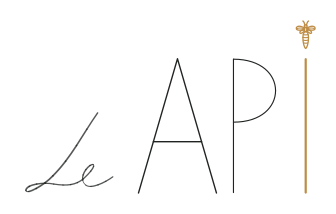
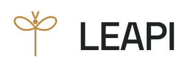
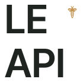
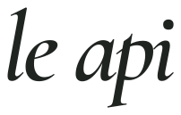
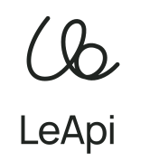
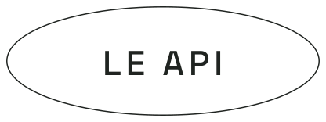

Авторская подпись

Развитие текущего знака: рукописное Le, тонкая графика и пчела над I.
LE API / ДИЗАЙН
Эскизы для сравнения на светлом фоне и в монохроме на фирменном зелёном. Действующий логотип пока сохранён.

Развитие текущего знака: рукописное Le, тонкая графика и пчела над I.
Более плотное строчное написание. Пчела заменяет точку над i.
Контрастная антиква и один золотой акцент. Направление для модной редакционной подачи.

Самостоятельный знак из двух крыльев и вертикали рядом с лаконичным LEAPI.

Плотное двухуровневое написание для компактных носителей.
Геометрические буквы с диагональным разрезом. Контрастная маркировка в духе модной этикетки.

Пластичный курсив с контрастом штрихов: движение и журнальная подача.

Непрерывная линия как авторская лигатура la; короткое написание LeApi под знаком.

Плоский овальный знак: типографическая этикетка для заставки, печати и предметных носителей.
Монограмма LA в выворотке рядом с leapi. Компактный знак для иконки и сильное короткое написание.